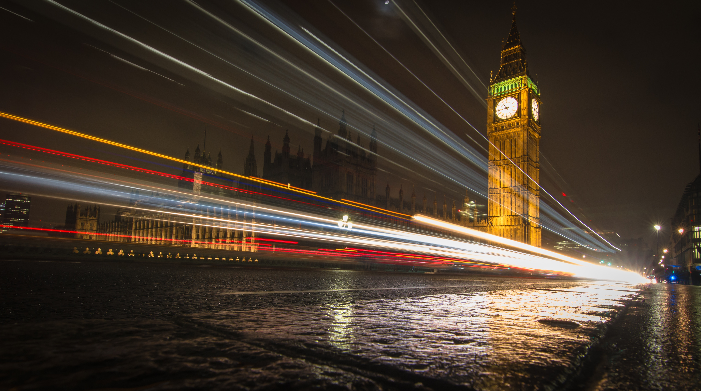
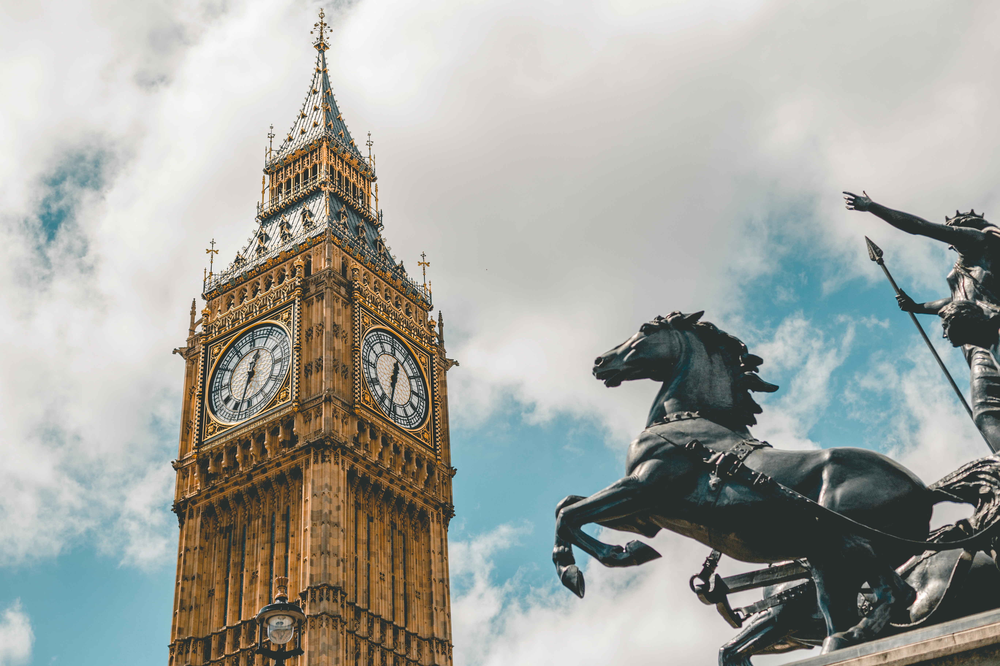

London
Big Ben
The Great Bell
Big Ben is the nickname for the Great Bell of the clock at the north end of the Palace of Westminster in London and is usually extended to refer to both the clock and the clock tower. The official name of the tower in which Big Ben is located was originally the Clock Tower, but it was renamed Elizabeth Tower in 2012 to mark the Diamond Jubilee of Elizabeth II.
tower was designed by Augustus Pugin in a neo-gothic style. When completed in 1859, its clock was the largest and most accurate four-faced striking and chiming clock in the world. The tower stands 315 feet (96 m) tall, and the climb from ground level to the belfry is 334 steps. Its base is square, measuring 39 feet (12 m) on each side. Dials of the clock are 23 feet (7.0 m) in diameter. On 31 May 2009, celebrations were held to mark the tower's 150th anniversary.
Big Ben is the largest of five bells and weighs 13.5 long tons (13.7 tonnes; 15.1 short tons). It was the largest bell in the United Kingdom for 23 years. The origin of the bell's nickname is open to question; it may be named after Sir Benjamin Hall, who oversaw its installation, or heavyweight boxing champion Benjamin Caunt. Four quarter bells chime at 15, 30 and 45 minutes past the hour and just before Big Ben tolls on the hour. The clock uses its original Victorian mechanism, but an electric motor can be used as a backup.
The tower is a British cultural icon recognised all over the world. It is one of the most prominent symbols of the United Kingdom and parliamentary democracy, and it is often used in the establishing shot of films set in London. The clock tower has been part of a Grade I listed building since 1970 and a UNESCO World Heritage Site since 1987.
On 21 August 2017, a four-year schedule of renovation works began on the tower, which are to include the addition of a lift. There are also plans to re-glaze and repaint the clock dials. With a few exceptions, such as New Year's Eve and Remembrance Sunday, the bells are to be silent until the work has been completed in the 2020s.
